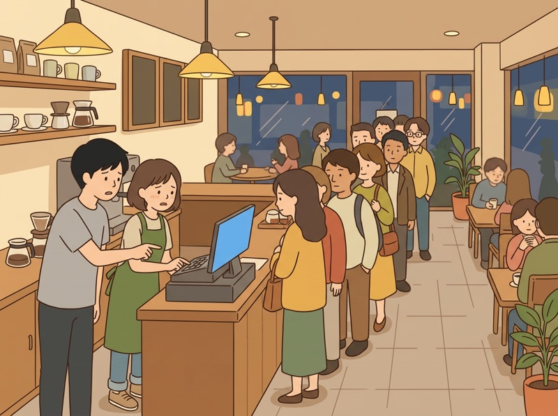
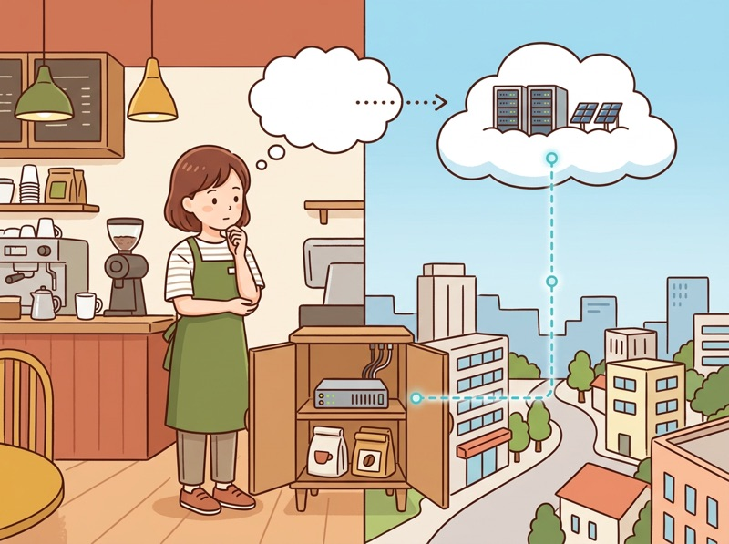

📱 スマホで開く
教室の画面を見ながら、自分のスマートフォンで、このページを開けます。スマートフォンのカメラで、このQRコードを読み取ってください。QRコードを押すと、大きく表示されます。
スマートフォンでも、ブラウザの翻訳が使えます。ゲームも、スマートフォンで遊べます。
🎮 用語シューティング（1人用のゲーム）
画面に出る「意味」に合う用語の的を撃つゲームです。授業の中で2回（ステージ1・ステージ2）遊びます。点数は記録されません。試験の点数とも関係なく、用語を覚えるための練習です。ゲームの画面も、ブラウザの翻訳で意味を母語にできます（用語は日本語のまま表示されます）。音は初めは出ません。
→ ゲームを開くこの回のゴール
- クライアントサーバシステムが、どんな役割分担かを説明できる。クラウドコンピューティングとオンプレミスの違いを言える
- 稼働率が何を表すかを言え、MTBFとMTTRから計算できる。直列と並列の稼働率の違いを、簡単な数字で計算できる
- デュアルシステム・フェールセーフ・フォールトトレラント・フールプルーフの違いを、例で言える
- ソリューションビジネスが、どんな仕事かを言える
- 過去問（令和7年度）を、問い方の型を使って解く
授業の流れ
2コマ連続（90分 + 90分 = 計180分）。休憩10分は授業時間に含めません。🎮のブロックは、ゲームで遊ぶ時間です。
前回の復習テスト → レジが止まったストーリー → 今日の地図 → 入出力装置とインタフェース
前回の復習テスト（約10分：テスト約5分＋解説の確認約5分）
前回（第7回）の内容を、1週間たって、どれだけ覚えているかを確かめる5問（約5分）。前回の確認テストで、損益分岐点の正答率が、ほかより低かった。そのため、損益分岐点の計算を、聞き方を変えて、何問か入れている。点数を競うものではない。覚えていることと、忘れていることを、自分で知るためのテスト。送信すると、点数と、正解・解説が表示される。そのあと、間違えた問題の解説を読む。分からないところは、隣の人か先生に聞く。
今日のストーリー：混んでいる夜に、レジが止まった（約10分）
駅前のカフェを開いたAさん（架空の話）は、お店のレジを、パソコンで動かしている。前回は、パソコンが遅い話だった。今回は、もっと困ること。お客さんが並ぶ、いちばん忙しい時間に、レジが止まってしまった。

1. 忙しい夜に、レジが止まる列が伸びる。お客さんは待っている。お店にとって、システムが止まることは、売上が止まること。- 2. 予備を用意するもし1台が止まっても、もう1台が代わりに動けるようにしておく。止まりにくい作り方（デュプレックスシステム・デュアルシステムなど）がある。

3. サーバを、持つか、借りるかお店の中に置いて自分で動かす（オンプレミス）か、インターネットの向こうで借りる（クラウドコンピューティング）か。- 4. IT会社に、相談するどうすれば止まらなくなるか。IT会社が、Aさんの困りごとを聞いて、解決策を提案する仕事が、ソリューションビジネス。
2・3は、システムの形と、止まりにくくする設計の話。4は、IT会社の仕事（ストラテジ系）の話。順番に学ぶ。
ペアで話す（約5分）：自分がよく使うアプリやサービス（地図、動画、決済、ゲームなど）が、使えなくなったことがあるか。そのとき、どう困ったか、どうしたか。日本語で話す。
今日の地図（約5分）
つなぐ装置から、止まらないシステムまで
入出力装置と、つなぐ規格（約10分、教科書 p.256-269）
パソコンやスマートフォンには、キーボード・マウス・画面・プリンタなどの入出力装置をつなぐ。つなぎ方の決まり（入出力インタフェース）には、線でつなぐ有線と、線のいらない無線がある。IPAのシラバスは、次のような規格名を、用語例に挙げている（確認日：2026-11-17）。今日は、名前と、おおまかな使い道を知っていればよい。
| つなぎ方 | 規格の名前 | おおまかな使い道（一般に） |
|---|---|---|
| 有線 | USB（Type-A / Type-B / Type-C など） | キーボード・マウス・USBメモリ・充電など、いろいろな機器をつなぐ |
| 有線 | HDMI・DisplayPort | 画面（ディスプレイ・テレビ）に、映像をつなぐ |
| 無線 | Bluetooth | イヤホン・キーボードなどを、近くで無線でつなぐ（第6回の問56で出た） |
| 無線 | NFC・RFID | 近づけて読み取る（交通系ICカード・電子マネーなど） |
つなぎ方：有線と無線
もう一つ。新しい装置をつないだとき、コンピュータが、その装置を使えるようにするためのソフトがデバイスドライバ。装置をつなぐだけで、自動的に使えるようになる機能をプラグアンドプレイという（どちらもシラバスの項目に出てくる）。
この表の規格は、用語カードには入れない。名前を見て、「あ、あれのことだ」と分かれば十分。表の「使い道」は、一般的な例。
処理形態とシステム構成 → クライアントサーバシステム → クラウドとオンプレミス → 🎮ゲーム①（テクノロジ系：コンピュータシステム 教科書 p.256-269）
① 処理のしかた：集中・分散・並列（約10分）
コンピュータで処理をするとき、仕事を、どこで、どう分けるか。シラバスは、代表的な処理形態として、次の3つ（ほかにレプリケーション）を用語例に挙げている。
| 処理形態 | どんな形か | Aさんのお店でたとえると |
|---|---|---|
| 集中処理 | 1台の大きなコンピュータに、仕事を集めて処理する | 注文も会計も、事務室の1台がすべて行う |
| 分散処理 | 仕事を、複数のコンピュータに分けて、ネットワークでつなぐ | 注文は店頭の機器、会計はレジ、集計は事務室、と分ける |
| 並列処理 | 1つの仕事を、複数に分けて、同時に処理する | 注文の山を、2人のスタッフで同時にさばく |
集中・分散・並列のイメージ
表の「たとえ」は、この教材の説明用。シラバスは、3つの名前（とレプリケーション）を用語例にしているだけで、定義文は書いていない。レプリケーション（データを複製して、同じ内容にそろえておくこと）は、過去問（問82）で出る。
② クライアントサーバシステム：頼む側と、頼まれる側（約10分）
分散処理の代表が、クライアントサーバシステム。サービスを頼む側（クライアント）と、頼まれて処理する側（サーバ）に、役割を分ける。ブラウザでWebページを開くとき、自分のパソコンやスマートフォンがクライアント、Webページを返すコンピュータがサーバ。第6回のDNSも、同じ形で動いていた。
クライアントサーバシステムの形
ほかの形として、シラバスは、対等な機器どうしが直接やり取りするピアツーピア、複数のコンピュータをまとめて1つのように使うクラスタ、1台のコンピュータの中に、仮想のコンピュータを作る仮想化なども、用語例に挙げている。今日は、名前だけ知っていればよい。
③ 持つか、借りるか：オンプレミスとクラウドコンピューティング（約10分、教科書 p.125-128）
Aさんは、予約のシステムのサーバを、どこに置くか考えている。
オンプレミスとクラウドコンピューティング
オンプレミス
サーバなどを、自社の施設の中に置いて、自社で運用する。
クラウドコンピューティング
サーバなどを、インターネット経由で借りて使う。
クラウドの代表的なサービスの形として、シラバスは（ソリューションの形態の）SaaS・PaaS・IaaSを用語例に挙げている（ストラテジ系のソリューションビジネスの用語例）。何を借りるかの違い。今日は、名前と、おおまかな意味だけ。
| 名前 | 何を借りるか（おおまかに） | たとえ |
|---|---|---|
| SaaS（サース） | ソフトウェアを、インターネット経由で使う | できあがった料理を、注文して食べる |
| PaaS（パース） | ソフトウェアを作って動かすための、土台（プラットフォーム）を借りる | キッチンと道具を借りて、自分で料理する |
| IaaS（イアース） | サーバなどの、インフラ（基盤）を借りる | 場所だけ借りて、設備から自分でそろえる |
IaaS・PaaS・SaaS：何を借りるか
表の「たとえ」は、この教材の説明用で、公式の説明ではない。クラウドの提供形態（パブリッククラウド・プライベートクラウドなど）も、シラバスの用語例にあるが、今日は扱わない。
ストーリーに戻る：Aさんの店のレジは、1台のパソコンにつながっている形だった。そのパソコンが止まると、お店全体が止まる。サーバの置き場所を考える前に、「止まりにくさ」を、数字で見る方法を、次に学ぶ。
手を動かす：自分のスマートフォンのアプリを、クライアントとサーバに分けてみる（約5分）
- 自分がよく使うアプリを1つ選ぶ（例：地図、動画、ゲーム）
- 自分のスマートフォンがクライアント。では、サーバは、何を処理していそうか。「要求」と「結果」に分けて、メモに書く（例：地図なら、要求＝「駅の場所」、結果＝「地図のデータ」）
- 隣の人と、見せ合う
🎮 ゲーム①：用語シューティング ステージ1（約10分）
ここまでに出た用語（クライアントサーバシステム・クラウドコンピューティング・オンプレミスと、前回の損益分岐点・SSD・変動費・固定費）を、ゲームで確かめる。画面の「意味」を読んで、合う用語の的を撃つ。点数は記録されない。最初は音が出ない。間違えた用語は、最後の画面に一覧が出る。
進め方：1回は約2分。目標は「ランクA以上」（7問中6問以上）。終わったら、間違えた用語の一覧を、下の用語カードで確かめて、もう一度遊ぶ。ページを開くと、「スタート」ボタンが出る。翻訳を使う人は、翻訳してから押す。
→ ステージ1を始める稼働率（MTBF・MTTR）→ 直列と並列 → 信頼性の設計 → ソリューションビジネス → 🎮ゲーム②（テクノロジ系 p.256-269、ストラテジ系 p.125-128）
① 稼働率：どれだけ動いているか（約12分）
止まりにくさを、数字で表したものが稼働率。「全体の時間のうち、動いている時間の割合」。IPAのシラバスは、稼働率・故障率・MTBF（平均故障間動作時間）・MTTR（平均修復時間）を用語例に挙げ、稼働率向上策の検討を活用例にしている（確認日：2026-11-17）。
- MTBF：故障が直ってから、次に故障するまでの、動いている時間の平均。長いほど、止まりにくい
- MTTR：故障してから、直るまでの、修理にかかる時間の平均。短いほど、早く直る
稼働率 ＝ MTBF ÷（MTBF ＋ MTTR）。動いている時間 ÷ 全体の時間、と考えると、式を忘れても作れる。
MTBFとMTTR：動く・故障・直すの繰り返し
例：Aさんのレジのパソコンは、平均で80時間動くと故障し、直すのに平均で20時間かかる（説明用の数字）。
- 動いている時間：80時間（MTBF）。直している時間：20時間（MTTR）。全体：80＋20＝100時間
- 稼働率＝80÷100＝0.8（80%）
- もし、修理が早くなって、MTTRが5時間になれば、80÷（80＋5）＝約0.94。直す時間が短くなると、稼働率が上がる
稼働率は、0から1の間の数（1に近いほど止まりにくい）。1を超えたら、計算が間違っている。
システムの「性能」は、名前だけ：「信頼性」（止まりにくさ）のほかに、システムの性能（どれだけ速く処理できるか）の見方もある。シラバスは、レスポンスタイム（応答時間：頼んでから、結果が返るまでの時間）とベンチマーク（性能を比べるための測定）を用語例に挙げている（確認日：2026-11-17）。今日は、名前と、おおまかな意味だけ。用語カードには入れない。
② 直列と並列：つなぎ方で、稼働率が変わる（約10分）
装置を複数つなぐとき、直列（全部が動いていないと、システムが動かない）と、並列（1台でも動いていれば、システムが動く）がある。装置の稼働率が、どちらも0.9のとき、計算してみる。
直列と並列：稼働率0.9の装置を2台つなぐ
今日、覚える考え方：直列はかけ算（全部が動く確率）。並列は「全部が止まる確率を、1から引く」。これは、過去問（問94）の型。
③ 止まりにくくする設計（約10分、教科書 p.256-269）
稼働率を上げるには、並列のように、予備を用意する。これが、信頼性の設計の考え方。シラバスは、次の語を用語例に挙げている。
| 用語 | どんな考え方か（やさしい言い換え） |
|---|---|
| デュアルシステム | 同じ処理を、2系統の装置で同時に行い、結果を照らし合わせる。片方が壊れても、もう片方で続けられる |
| デュプレックスシステム | 主の装置と、予備の装置を用意する。主が壊れたら、予備に切り替える（予備の待機のしかたに、下の2つがある） |
| ホットスタンバイ | 予備の装置を、すぐ引き継げる状態で待機させる |
| コールドスタンバイ | 予備の装置を、止めておき、必要になったら、起動して引き継ぐ |
デュアルシステムとデュプレックスシステム
もう一つ、故障や間違いが起きたときの考え方として、似た名前の3つがある。「何が起きたとき、どうなるように作るか」で見分ける。
似た名前の3つを、見分ける
フェールセーフ
故障したとき、安全な側に動く。
フォールトトレラント
故障しても、動き続ける。
フールプルーフ
人が間違った操作をしても、危険にならない。
RASIS（レイシス）：教科書の語（約3分）。信頼性を考えるときの5つの見方の頭文字（Reliability＝信頼性、Availability＝可用性、Serviceability＝保守性、Integrity＝保全性、Security＝安全性）。今日の話とのつながりは、次のとおり。
RASIS：信頼性の5つの見方
- 可用性：使いたいときに、使えること。数字で表したものが、稼働率
- 信頼性：壊れにくいこと。MTBFが、目安になる
- 保守性：壊れたとき、直しやすいこと。MTTRが、目安になる
RASISは、教科書（p.256-269）の語。IPAシラバスVer.6.5の用語例には、見当たらない（確認日：2026-11-17）。本によって、Integrityを「保全性」「完全性」と書くなど、言い方に違いがある。今日は、「使える・壊れにくい・直しやすい」と、稼働率・MTBF・MTTRのつながりが分かれば十分。確認テストとゲームには、出さない。
④ ソリューションビジネス：IT会社の仕事（約5分、教科書 p.125-128）
ストーリーの4。IPAのシラバスは、ソリューションビジネスを「顧客との信頼関係を築き、顧客の問題点を知り、問題解決案を提案し、問題解決への支援を行うこと」と書いている（確認日：2026-11-17）。Aさんの困りごと（レジが止まる）を聞いて、IT会社が、解決策を提案する。解決のしかたには、自社で作る・パッケージ（できあがったソフト）を入れる・他社のサービス（クラウドなど）を使う、などがある（シラバスの記述）。
ソリューションビジネスの流れ
ペアで話す（約3分）：Aさんの店に、おすすめしたいのは、「予備のパソコンを置く（オンプレミス）」と「予約システムをクラウドで借りる」の、どちらか。理由も、日本語で話す。正解は1つではない。お金・手間・止まりにくさを使って、説明する。
🎮 ゲーム②：用語シューティング ステージ2（約10分）
今日の用語（稼働率・MTBF・MTTR・デュアルシステム・フェールセーフ・フォールトトレラント・フールプルーフ）と、1限のクライアントサーバシステム・クラウドコンピューティング・オンプレミスが混ざる。的が降りてくる速さも上がる。ライフは3つ。最後の画面に、間違えた用語の一覧が出る。ここでも、点数は記録されない。
進め方：1回は約2分。目標は「ランクA以上」（10問中8問以上）。何度でも挑戦してよい。終わったら、間違えた用語の一覧を用語カードで確かめる。「スタート」ボタンを押すまで、時間は進まない。
→ ステージ2を始める過去問演習 → 用語を説明し合う → 確認テスト（1回目）
過去問演習（約15分）：今日の範囲の令和7年度の公開問題を、問い方の型を使って解く。2問ある。自分で選んでから、答えと解説を見る。
【例題①】問94 稼働率0.9の装置で並列システムを構成したい。このシステムの稼働率を0.999とするためには，最低何台の装置で並列システムを構成する必要があるか。ここで，並列システムを構成したときに，少なくとも1台の装置が稼働していればシステムは正常に稼働しているものとする。
出典：令和7年度 ITパスポート試験 公開問題 問94（テクノロジ系。問題文・選択肢は原文のまま）
自分で選んだあとに、答えと解説を見る
正解：イ（型：並列は「全部が止まる確率」を1から引く。台数を、1台ずつ増やして確かめる）。1台が止まっている確率は、1－0.9＝0.1。2台：全部止まる確率は0.1×0.1＝0.01。稼働率は1－0.01＝0.99。0.999に足りない。3台：全部止まる確率は0.1×0.1×0.1＝0.001。稼働率は1－0.001＝0.999。目標に届く。だから、最低3台。今日の図の「並列」の計算を、台数を変えて続けるだけで解ける。
【例題②】問82 あるコンピュータのデータベースの内容を他のコンピュータのデータベースに複製して，両者の内容が一致するように同期させるDBMSの機能はどれか。
出典：令和7年度 ITパスポート試験 公開問題 問82（テクノロジ系。問題文・選択肢は原文のまま）
自分で選んだあとに、答えと解説を見る
正解：ウ（型：問題文のキーワードに合う用語を選ぶ。「複製」「同期」「内容が一致」）。レプリケーションは、データを複製して、複数の場所で同じ内容にそろえておくこと。シラバスの処理形態の用語例にもある。1台が止まっても、複製を持つもう1台で続けられるので、止まりにくいシステムの考え方につながる。バックアップ（イ）は、壊れたときのために、データの写しを別に保存すること。ロールバック（エ）は、処理の途中で失敗したとき、元の状態に戻すこと。アーカイブ（ア）は、長く保管するために、まとめて保存すること。この問題の仲間（データベース）は、第9回でもう一度学ぶ。
令和7年度の公開問題の確認した範囲では、クライアントサーバシステム・クラウドコンピューティング・ソリューションビジネスを直接問う問は、見つからなかった。この3つは、確認テストと練習クイズで確かめる。
用語を、ペアで説明し合う（約10分）：下の「用語カード」の12語から、3つずつ選び、1人が、やさしい日本語で意味を説明する。もう1人は、どの用語かを当てる。
確認テスト（1回目）（約5分）
今日の内容の5問。点数を競うものではない。今、どこまで分かっているかを、自分で知るためのテスト。分からない問題は、思い出せる範囲で答える。送信すると、点数と、正解・解説が表示される。
振り返り → 用語カードの提出・次回予告
- 振り返り（約3分）：1回目の結果の画面で、点数を覚えて、間違えた問題の解説を読む。分からないところは、隣の人に聞く、または、このページの用語カード・練習クイズ・ゲームで確かめる
- 確認テスト（2回目）は任意：時間がある人、確かめたい人は、下の「任意の取り組み」から受ける
- 用語カード：今回覚えた用語にチェックを入れて、フォームで提出する（約3分）
- 質問と、次回までの課題の確認（約1分）。読むだけの「就活ワンポイント」もある。自分の点数の推移は、「任意の取り組み」の「自分の成績を見る」から、いつでも見られる
- 次回（第9回）：ソフトウェアとデータベース：使いやすさとデータ活用——OS・データベース・情報デザイン（テクノロジ系 p.276-313）
用語カード（今日の用語）
用語カードは、今日の授業で出る用語と、その意味のリスト。授業の最後に、フォームで今回覚えた用語にチェックを入れて提出する。用語は日本語のまま覚える。試験は日本語で行われる。
| 用語 | 意味 |
|---|---|
| 稼働率 | 全体の時間のうち、システムが動いている時間の割合。MTBF÷（MTBF＋MTTR）で求める。1に近いほど、止まりにくい |
| MTBF | 平均故障間動作時間。直ってから次に故障するまで、動いている時間の平均。長いほど、止まりにくい |
| MTTR | 平均修復時間。故障してから、直るまでにかかる時間の平均。短いほど、早く直る |
| RASIS | 信頼性を考える5つの見方（信頼性・可用性・保守性・保全性・安全性）の頭文字。教科書の語で、IPAシラバスの用語例にはない |
| デュアルシステム | 同じ処理を2系統の装置で同時に行い、結果を照らし合わせる方式。片方が壊れても、続けられる |
| フェールセーフ | 故障したとき、安全な側に動くようにする設計の考え方（例：故障したら、機械が止まる） |
| フォールトトレラント | 一部が故障しても、システム全体が動き続けるようにする設計の考え方 |
| フールプルーフ | 人が間違った操作をしても、危険にならないようにする設計の考え方 |
| クライアントサーバシステム | サービスを頼む側（クライアント）と、頼まれて処理する側（サーバ）に、役割を分ける方式 |
| クラウドコンピューティング | サーバなどを、インターネット経由で借りて使う形態 |
| オンプレミス | サーバなどを、自社の施設の中に置いて、自社で運用する形態 |
| ソリューションビジネス | 顧客の問題点を知り、解決案を提案し、解決を支援する仕事（ITの会社が行う） |
練習クイズ（サイト内・記録なし）
確認テストの内容を、自分のペースで練習するためのクイズ（確認テストと同じ内容）。回答はこのページの中で判定されるだけで、どこにも送信・保存されず、成績にも含まれない。何度でも試せる。
Q1ある装置は，平均80時間動くと故障し，修理に平均20時間かかる。この装置の稼働率はどれか。
稼働率は、動いている割合。稼働率＝MTBF（平均故障間動作時間）÷（MTBF＋MTTR（平均修復時間））＝80÷（80＋20）＝0.8。アは、故障している割合（20÷100）。イは、MTTRをMTBFで割った数。エは、MTBFをMTTRで割った数で、稼働率は1を超えない。
Q2稼働率が0.9の装置を2台，並列に接続したシステムがある。少なくとも1台が動いていれば，システムは正常に動いているものとする。このシステムの稼働率はどれか。
並列システムは、2台とも止まっているときだけ止まる。1台が止まっている確率は1－0.9＝0.1。2台とも止まる確率は0.1×0.1＝0.01。だから、稼働率は1－0.01＝0.99。アは、2台とも動いていなければならない（直列）の計算（0.9×0.9）。エは、3台の並列にしたときの値。
Q3システムの一部が故障したとき，システム全体を安全な状態に移すように設計する考え方はどれか。
フェールセーフは、故障したときに、安全な側に動くようにする設計の考え方（例：故障したら、機械が止まる）。フォールトトレラントは、故障しても、動き続けるようにする考え方。フールプルーフは、人が間違った操作をしても、危険にならないようにする考え方。ホットスタンバイは、予備の装置を、すぐ引き継げる状態で待機させる方式。
Q4サービスを要求するコンピュータ（クライアント）と，要求に応じて処理するコンピュータ（サーバ）に役割を分けて，処理する方式はどれか。
クライアントサーバシステムは、サービスを頼む側（クライアント）と、頼まれて処理する側（サーバ）に、役割を分ける方式（IPAシラバスの用語例）。ピアツーピアは、対等な機器どうしが直接やり取りする方式。デュアルシステムは、同じ処理を2系統で行う信頼性の方式。バッチ処理は、まとめて処理する利用形態。
Q5自社の建物の中にサーバなどを置いて，自社で運用する形態はどれか。
オンプレミスは、サーバなどを自社の施設の中に置いて、自社で運用する形態（IPAシラバスの用語例）。クラウドコンピューティングは、インターネット経由で、サーバなどを借りて使う形態。SaaSは、クラウドで、ソフトウェアを使うサービス。アウトソーシングは、業務を外部の会社に任せること。
任意の取り組み
必須ではありません。時間があるとき、確かめたいときに使います。
用語シューティング（ゲーム）
授業で遊んだゲームを、何度でも遊べます。間違えた用語の一覧を見て、用語カードで確かめると、覚えやすくなります。
確認テスト（2回目）
1回目と同じ5問です（問題の順番は違います）。受けたら、結果の画面の点数を、1回目の点数と自分で比べます。1回目の点数を、覚えておきます。
自分の成績を見る
診断テスト・復習テスト・確認テストの点数の推移と、次に復習するとよい用語を見られます。学校のGoogleアカウントでログインすると、自分の分だけが表示されます。
就活ワンポイント（任意）
授業時間には含めない、読むだけのコラム。成績にも含まれない。今日の言葉を、面接で使う練習。
面接で「システムが止まったとき、どうしますか」と聞かれたら
ITの仕事でも、お店のアルバイトでも、機械やシステムが止まることはある。そのときの考え方を、短く説明する練習になる。答えは、3つの順番で話すと、分かりやすくなる（一つの考え方）。下の吹き出しが、順に現れる。
- 例文は一例。自分が実際に学んだこと、したことを話す。していないことは、言わない。
- 用語を、日本語のまま使えて、しかも「予備を用意する」のようなやさしい言い方で言い換えられると、ITに詳しくない人にも伝わる。
- 「稼働率が高いほど、止まりにくい」のように、数字と意味をセットで言えると、説得力が出る。
答え方の順番（結論・理由・まとめ）は、この教材の一つの考え方で、公式のルールではない。IPAは、ITパスポート試験の合格について、「就職活動において、自らの知識を証明し、自己アピールに役立ちます」と紹介している（IPA「合格のメリット」、確認日：2026-11-10。留学生向けに書かれた説明ではない）。
課題・次回までにやること
教科書 p.276-313 を読み、OSが何をするものか、確認しておく（第9回は「ソフトウェアとデータベース：使いやすさとデータ活用」）。第9回の授業の最後に、覚えた用語をフォームで提出する。
練習クイズは、全問正解になるまで繰り返す。ゲームは、最後の画面の「間違えた用語」の一覧を見て、用語カードで確かめる。
今日の範囲（テクノロジ系 p.256-269、章末確認問題は p.270）を、自分のペースで解く。授業では、同じ範囲を確認テストで確かめる。
身近な装置（例：自分のスマートフォン、学校のWi-Fi）を1つ選び、「平均で何時間動いて、何時間で直るか」を、自分で決める（架空の数字でよい）。授業の式で、稼働率を計算する。そのあと、同じ装置を2台並列にしたら、稼働率がどうなるかも計算する。